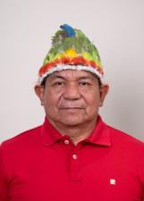
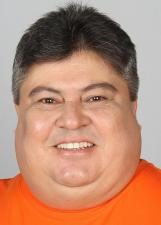

Amazonas
Quem está no cargo. Mostramos os eleitos em 2026, que assumem em 2027.
Resultado provisório TSE, capturado em 25/10/2026. O resultado só é confirmado na diplomação.
Poder Executivo
Administra o governo e executa as leis: saúde, educação, segurança, estradas e o orçamento.
Governador
Aguardando o 2º turno
Os dois candidatos ainda disputam. Quando o TSE divulgar o resultado, o eleito aparece aqui.
Quem comanda cada cidade do estado.
Poder Legislativo
Cria as leis, aprova o orçamento e fiscaliza o Executivo.
Senadores
Eduardo BragaMDB · 1.240.471 votos✓ Reeleito›Plinio ValérioPSDB · 948.793 votos✓ Reeleito›Deputados federais (8)
Bancada federal por partido
8 cadeiras de Amazonas
- MDB225%
- PL225%
- UNIÃO225%
- PSD112%
- REPUBLICANOS112%
Do partido com mais cadeiras para o com menos, não por posição política. Cada partido usa a sua cor de marca.
Deputados federais (8): buscar e ver a lista
Deputados estaduais e distritais (24)
Assembleia por partido
24 cadeiras de Amazonas
- UNIÃO521%
- PSD417%
- AVANTE312%
- MDB312%
- PL312%
- PODE28%
- PT28%
- AGIR14%
- REPUBLICANOS14%
Do partido com mais cadeiras para o com menos, não por posição política. Cada partido usa a sua cor de marca.
Deputados estaduais e distritais (24): buscar e ver a lista

Clóvis CurubãoPT · 34.869 votos›Cristiano DangeloMDB · 34.615 votos✓ Reeleito›DR. George LinsUNIÃO · 49.999 votos✓ Reeleito›David BemerguyMDB · 28.415 votos›
David ReisAVANTE · 33.012 votos›Delegado PériclesPL · 58.737 votos✓ Reeleito›Débora MenezesPL · 68.438 votos✓ Reeleito›Eduardo AlfaiaAVANTE · 22.087 votos›Eraldo CBPODE · 21.896 votos›Eurico TavaresPSD · 49.530 votos›Felipe SouzaPODE · 39.081 votos✓ Reeleito›Marcelo PalhanoAGIR · 27.753 votos›Mayra DiasPSD · 40.135 votos✓ Reeleito›Mário César FilhoUNIÃO · 67.800 votos✓ Reeleito›Rodrigo GuedesREPUBLICANOS · 42.295 votos›RozenhaPSD · 62.201 votos✓ Reeleito›Thiago AbrahimMDB · 51.624 votos✓ Reeleito›Wanderley MonteiroUNIÃO · 38.490 votos✓ Reeleito›Wilker BarretoPSD · 55.590 votos✓ Reeleito›Zé RicardoPT · 72.518 votos↺ Retorno›Os eleitos de cada cidade do estado.
Poder Judiciário
Julga os conflitos e garante que as leis sigam a Constituição.
Os desembargadores do Tribunal de Justiça e do Tribunal Regional Eleitoral. Não são eleitos.
Como ler
★ Novato Primeiro mandato nesta casa (Câmara ou Senado).
✓ Reeleito Já estava no cargo e foi eleito de novo.
↺ Retorno Já teve mandato, mas estava fora.
Sem selo Não conseguimos ligar a pessoa a um mandato anterior. Isso não quer dizer que seja novata: simplesmente não afirmamos nada.
Provisório Só é confirmado na diplomação.